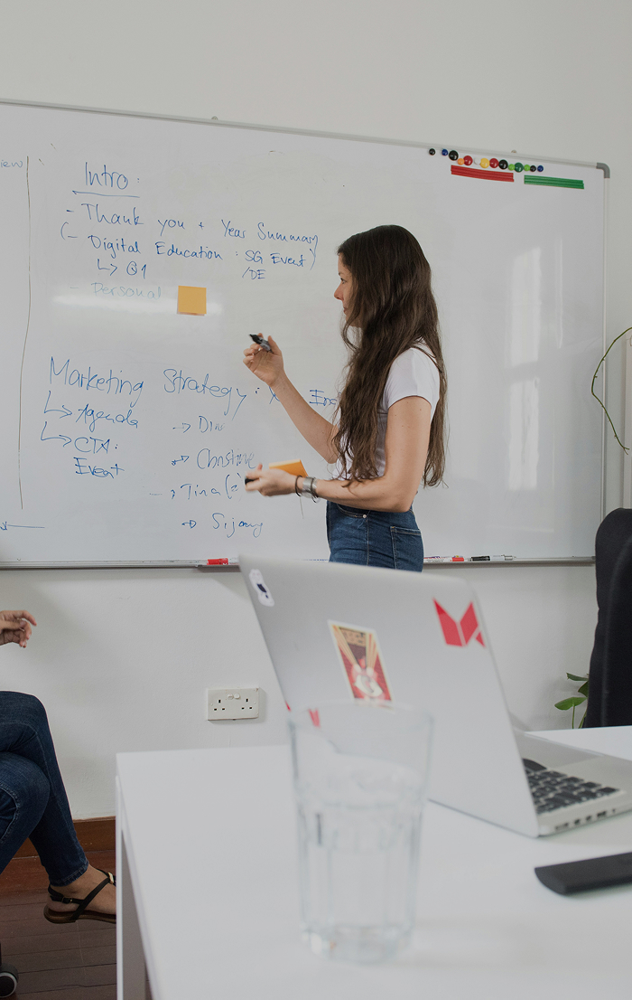
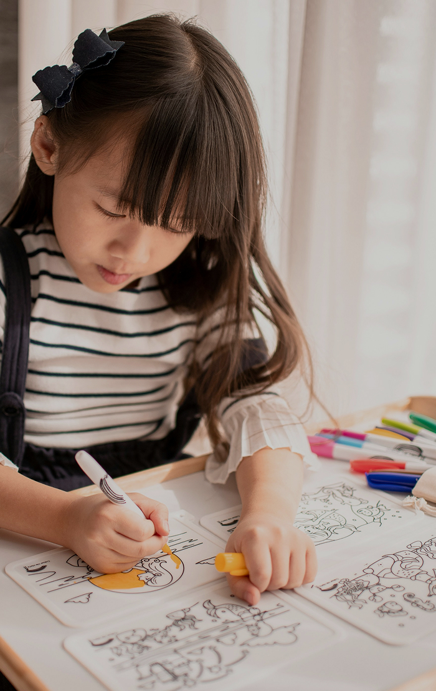
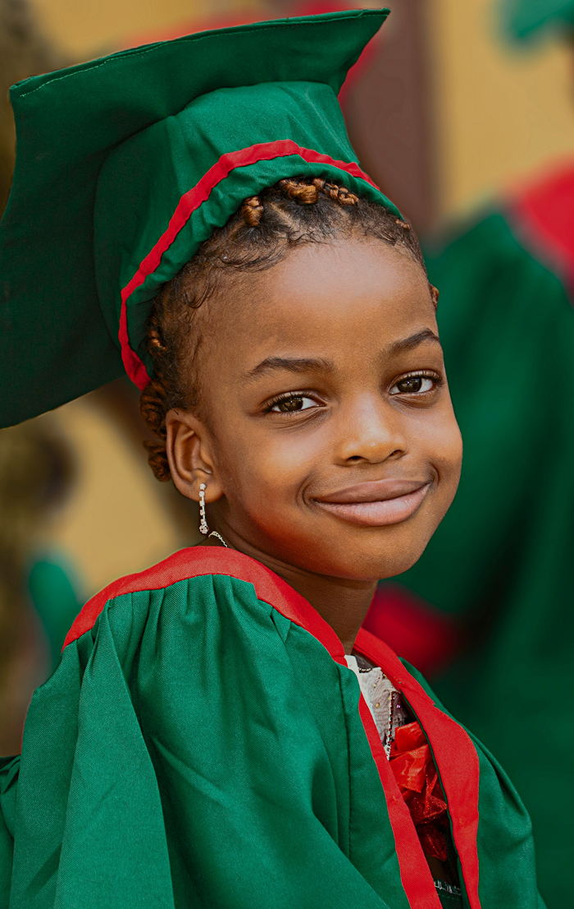
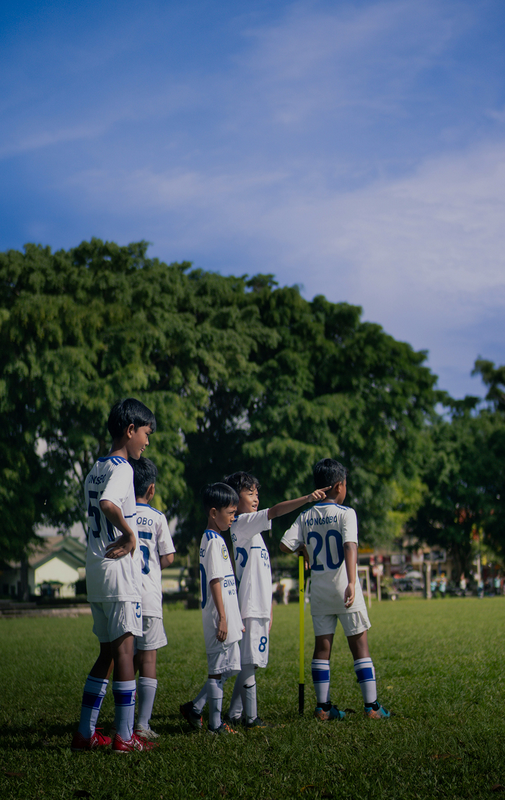

팝업
멘토링부터 글로벌까지,
폭넓은 장학사업 소개
-
멘토링
꿈장학사업꿈과 가능성이 있는 청소년을 선발해 멘토의 교육·정서적 지원 속에 꿈 탐색과 재능 개발을 돕는 장학사업
-

리더육성
장학사업우수 대학(원)생을 선발해 장학금과 교육을 지원, 미래 사회 리더로 성장하도록 돕는 사업
-

배움터
교육지원사업교육 소외 아동·청소년을 위해 지역 배움터가 협력해 교육과 복지 안전망을 지원하는 사업
-

글로벌
장학사업한인후손과 개발도상국 아동·청소년, 대학(원)생을 지원해 미래 글로벌 리더로 양성하는 사업
-

방과후
학교 대상교육부 주최, 재단·교육개발원·중앙일보 공동 주관으로 우수 방과후학교 학교·교사·단체 시상
-
청소년치아
교정지원사업가정형편으로 치료가 어려운 꿈장학생에게 치과 단체 후원으로 무료 치아교정 기회를 제공하는 사업
별빛 속 재단 활동,
청소년 꿈의 여정
-
 글로벌 희망장학사업
글로벌 희망장학사업꿈을 향한 날갯짓, 세계를 향한 희망의 여정
무더위가 한풀 꺾인 9월의 어느 날, 청량한 가을하늘처럼 밝은 표정의 장학생들이 한자리에 모였다. 가슴 속에 품은 꿈을 실현하기 위해 언어도, 문화도 낯선 한국 땅에 온 이들은 글로벌 희망장학생이라는 이름으로 하나 돼 저마다의 꿈을 향해 힘차게 날아오를 준비를 마쳤다. 푸른 하늘을 향해 비상하는 새들처럼, 서로 발맞춰 나가며 세상을 변화시킬 희망의 날갯짓을 시작한 이들의 첫 만남을 들여다본다.
-
 리더육성 장학사업
리더육성 장학사업열정으로 하나 된 우리들의 슈퍼 이끌림
하얀 티셔츠 위에 저마다의 꿈을 꾹꾹 눌러 담은 대학 희망장학생들이 강원도 평창에 모였다. 함께 웃고, 목청껏 응원하며 반짝이는 아이디어를 공유한 시간. 가슴 뛰는 목표를 향한 약속과 나눔의 가치를 마음에 새기며 진짜 친구로 거듭났던 대학희망장학 리더십캠프 현장으로 떠나보자.